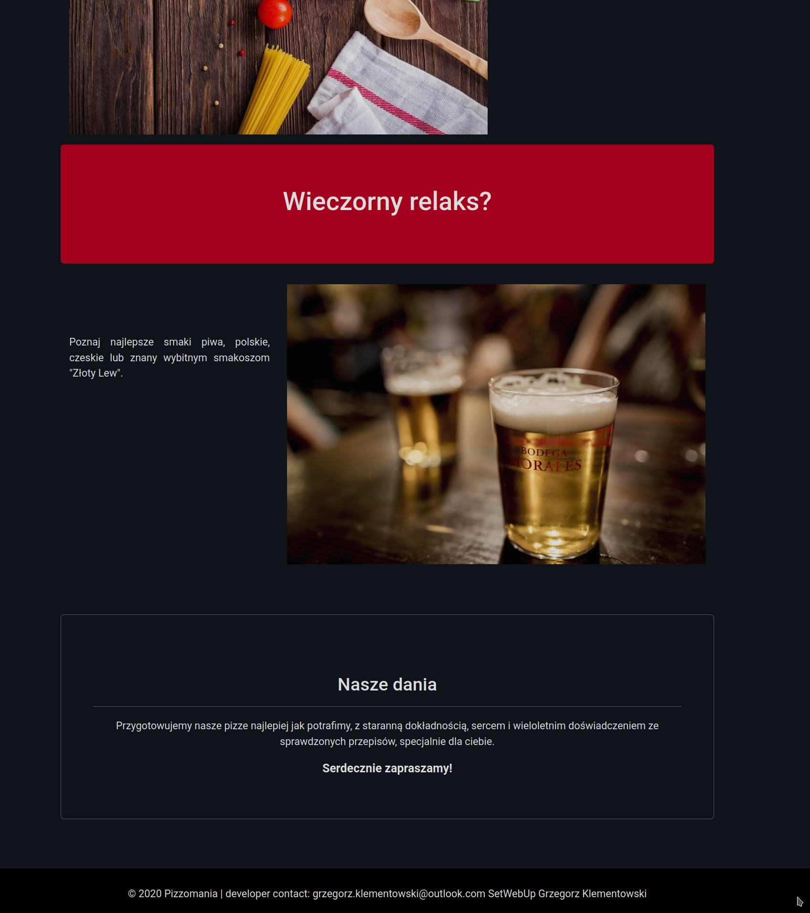
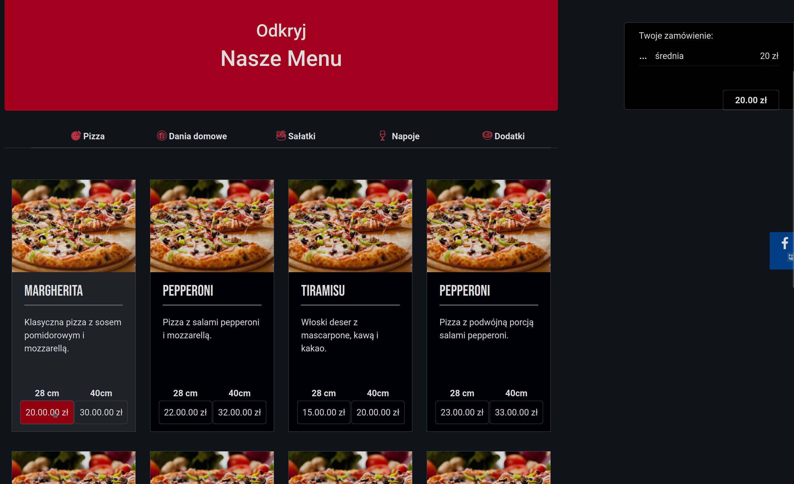
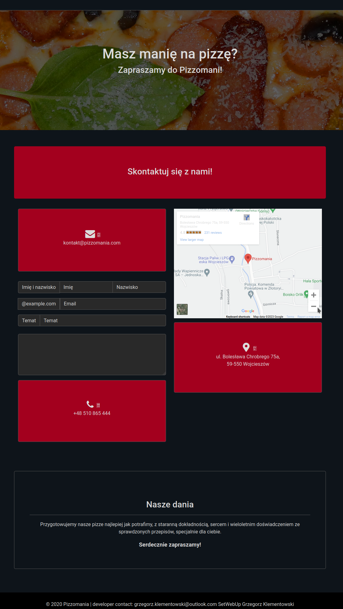
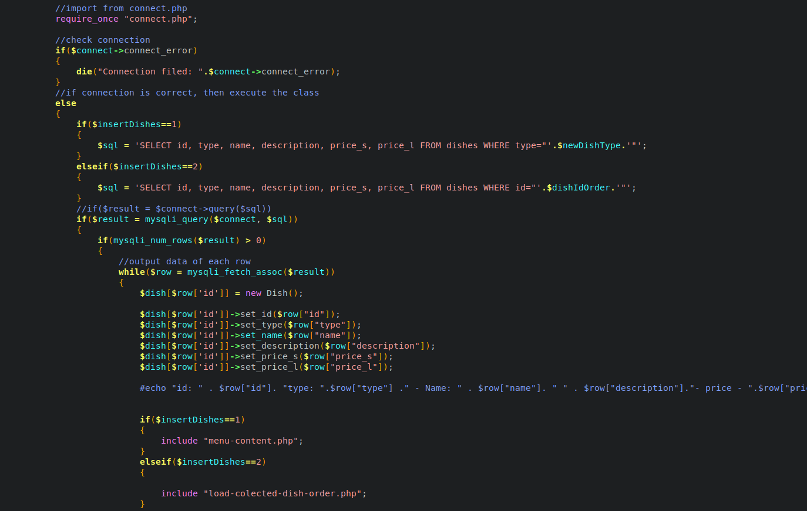
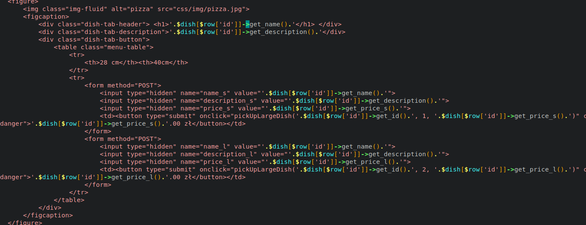
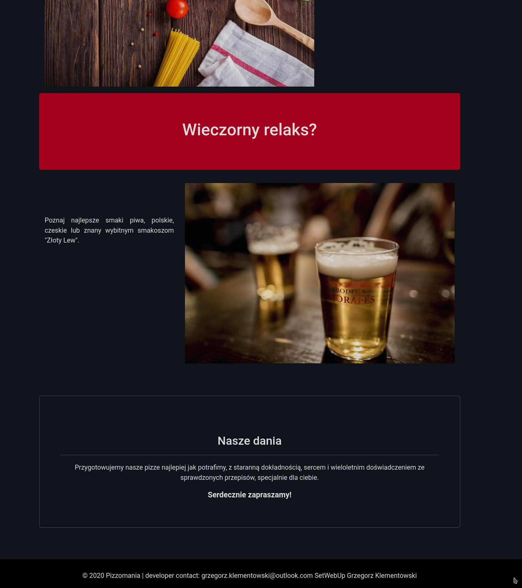
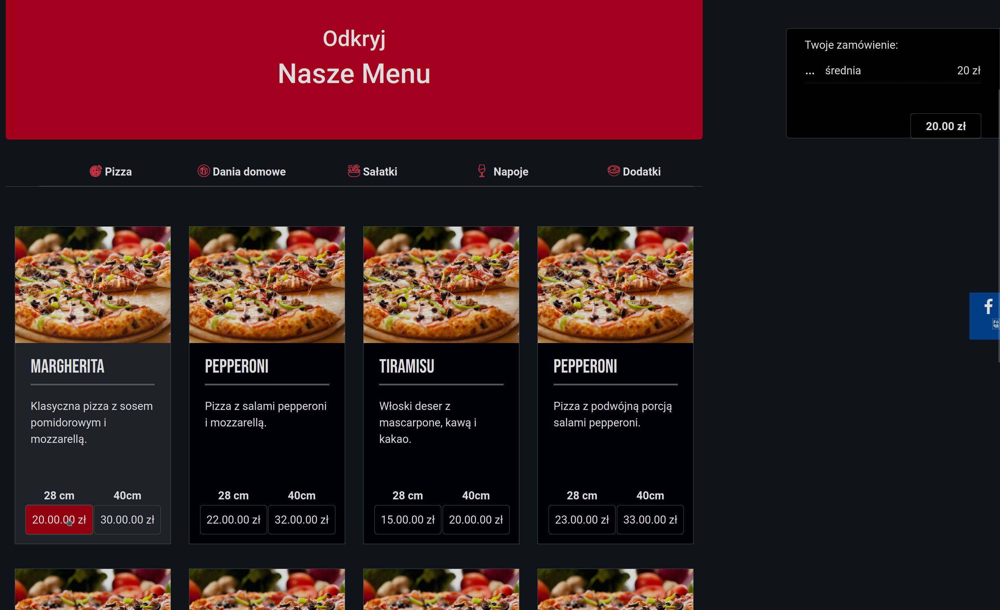
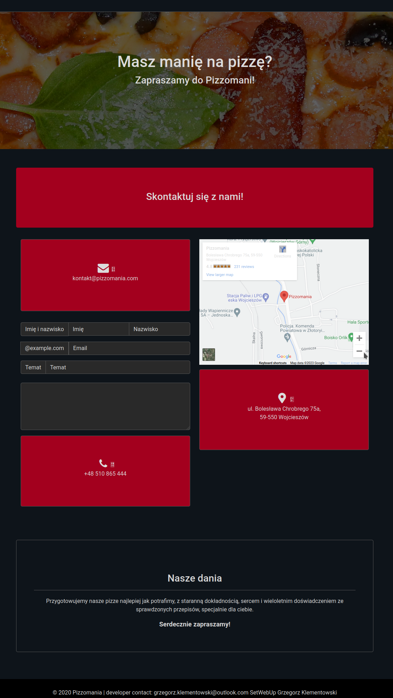
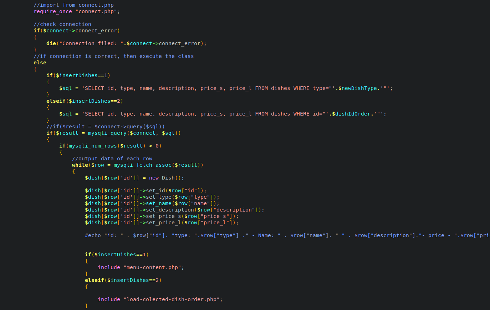
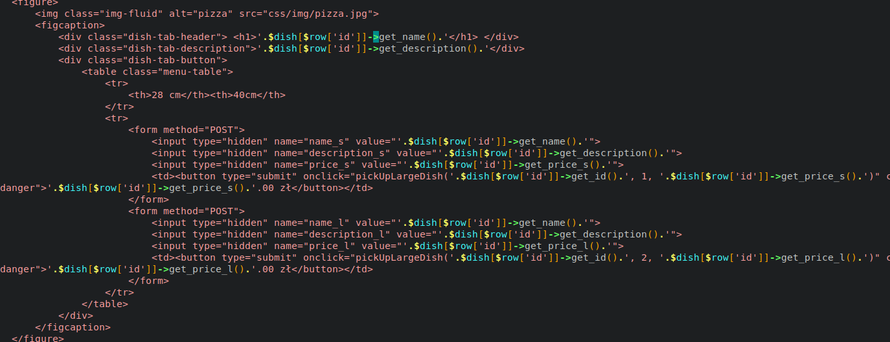

Features
- Dynamic Menu and Product Display: Your site features a dynamically generated menu (from menu-content.php), showcasing various types of pizzas with descriptions and prices. This is a key feature that allows users to easily browse and select products.
- Order Management: Functions in load-colected-dish-order.php and dishes.php facilitate efficient processing and management of customer orders. This includes collecting order data and presenting it in an accessible manner.
- Interactive Photo Gallery: Using JavaScript (main.js), you create an interactive photo gallery, allowing users to view images of dishes and the restaurant’s ambiance. This is important for visually engaging customers.
- Responsiveness and Styling: The use of Bootstrap ensures that the site is responsive and looks good on various devices. Styling and layout are crucial for providing a pleasant user experience.
- Modular Components: The use of modular components (components.php) indicates an efficient structure of the site, allowing for easy modifications and future development.
- Advanced JavaScript Features: Functions like pickUpLargeDish in main.js showcase advanced JavaScript capabilities, enabling dynamic interactions such as updating the shopping cart and managing the state of the page.
- SEO and Accessibility: Optimization for SEO and accessibility through proper meta tags and alt attributes for images enhances the site's usability and visibility in search engines.
Used skills
- Object-Oriented Programming (OOP) Skills: The Dish class in load-dishes.php demonstrates your understanding and application of the object-oriented paradigm. Defining getters and setters for various properties of the Dish object illustrates how you organize and manage data in an object structure.
- PHP and HTML in Practice: In menu-content.php, you combine PHP with HTML, showcasing your ability to create dynamic web content. You use PHP to inject data from Dish objects directly into the HTML structure, a key skill in developing dynamic websites.
- Database Management and SQL: In load-dishes.php, you perform SQL queries to the database, showing your ability to interact with databases. You select data from the database based on specific criteria, a fundamental element of most web applications.
- Frontend and Backend Integration: In menu-content.php, you use JavaScript (onclick in button tags) to interact with users, demonstrating your ability to connect backend (PHP) with frontend scripts (JavaScript).
- Dynamic Content Loading: Using AJAX in load-dishes.php to load content on demand shows your skills in creating responsive and interactive web pages.
- Good Coding Style: Your code is well-organized and readable, evidencing your approach to writing maintainable and easy-to-understand code.
- Error Handling and Debugging: You check the database connection and perform appropriate actions in case of errors, which is important for application stability.
- Modularity and Code Reusability: In components.php, you define functions such as component_head, component_nav, component_footer, etc., exemplifying a modular approach to coding. This allows for easier code organization and reuse, crucial for maintaining and developing large projects.
- SEO and Accessibility Practices: In components.php, you pay attention to SEO and accessibility practices by adding meta tags, descriptions, keywords, etc., important for the site's visibility in search engines. Additionally, you use alt attributes for images, crucial for accessibility.
- Content Management: In dishes.php, you have a script that loads data from the database and dynamically creates page content. This demonstrates your skills in content management and creating interactive user interfaces.
- Using Bootstrap and Responsive Design: You use Bootstrap, a popular CSS framework, to style page elements. This shows your knowledge of modern techniques in designing responsive user interfaces that look good on various devices.
- Advanced Error Handling: In dishes.php, you include error control for database connection issues, important for creating reliable web applications.
- Well-Organized HTML and PHP Code: Your PHP files contain well-organized code that combines PHP logic with HTML. This shows your skills in writing readable and organized code, easy to maintain and develop.
- Using jQuery: You utilize jQuery, indicating your familiarity with popular JavaScript libraries. You use jQuery for DOM manipulation and event handling, typical in modern front-end development.
- Dynamic Content Loading: You create a dynamic photo gallery by generating HTML content in a loop and adding it to the DOM. This shows how effectively you load content on the page without needing to reload it.
- Event Handling: You implement event handling functions such as openPhoto and pickUpLargeDish, which respond to user actions. This is an important aspect of creating interactive web pages.
- CSS Style Manipulation with JavaScript: You use JavaScript to dynamically change CSS styles, for example, in the openPhoto function, where you modify the display of elements. This demonstrates your ability to create dynamic, interactive user interfaces.
- Backend Communication: You use the $.load() function to fetch data from the PHP server, indicating your knowledge of AJAX and asynchronous communication with the server. This is a key element in creating responsive web applications.
- State Management: With each dish selection, you update the shopping cart and the total amount due, showing how you manage the page's state and dynamically update information for the user.
Project screenshots
 








